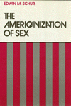
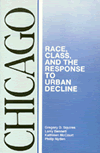
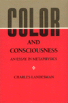
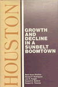
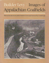
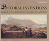
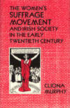

|
|
The
Afrocentric Idea
Asante, Molefi Kete
Asante's spirited engagement with culture warriors, neocons, and
postmodernists updates this classic
New in Paperback!
256 pp • 5.5x8.2 • Fall 1987
paper 1-56639-595-X
EAN 978-1-56639-595-3
|
| 
|
The
Americanization of Sex
Schur, Edwin M.
Combining sociological, feminist, and Marxist perspectives to examine
the specific features of American life that shape our sexual outlooks
and behaviors
New in Paperback!
248 pp • Spring 1988
paper 0-87722-633-4
EAN 978-0-87722-633-8
|
|
|
Before
It's Too Late
The Child Guidance Movement in the United States, 1922-1945
Horn, Margo
A history of the Commonwealth Fund, 1922-1945
260 pp • Spring 1989
cloth 0-87722-589-3
EAN 978-0-87722-589-8
|
| 
|
Beyond
the Barricades
The Sixties Generation Grows Up
Whalen, Jack, and Richard Flacks
Where do young revolutionaries go when the revolution doesn’t
happen?
324 pp • Spring 1989
cloth 0-87722-606-7
EAN 978-0-87722-606-2
|
| 
|
Chicago
Race, Class, and the Response to Urban Decline
Squires, Gregory D., Larry Bennett, Kathleen McCourt, and Philip Nyden
The social, economic, and political costs of the growth ideology
for the Windy City
New in Paperback!
248 pp • Fall 1987
paper 0-87722-617-2
EAN 978-0-87722-617-8
|

|
Citizen
Lawmakers
The Ballot Initiative Revolution
Schmidt, David D.
The stories of the individual activists and political groups that
revitalized this use of Initiative and Referendum
352 pp • Spring 1989
cloth 0-87722-594-X
EAN 978-0-87722-594-2
|
| 
|
Color
and Consciousness
An Essay in Metaphysics
Landesman, Charles
Defending a view called color skepticism—distinct from radical
skepticisms—about the external world
149 pp • Spring 1989
cloth 0-87722-616-4
EAN 978-0-87722-616-1
|
| |
The Consolations of Philosophy
Hobbes's Secret; Spinoza's Way
Rosenthal, Henry M. and Abigail L. Rosenthal
Posthumous study of the social contract in Hobbes's Leviathan
and Spinoza's Ethic
248 pp • Spring 1989
cloth 0-87722-610-5
EAN 978-0-87722-610-9
|
|
|
Constructing
the Urban Culture
American Cities and City Planning, 1800-1920
Schultz, Stanley K.
Locating the beginnings of city planning as early as the 1820s
400 pp • Spring 1989
cloth 0-87722-587-7
EAN 978-0-87722-587-4
|
|
|
Documents
of American Constitutional and Legal History
From Settlement through Reconstruction (vol. 1)
The Age of Industrialization to the Present (vol. 2)
Urofsky, Melvin I., ed.
Covers the entire range of constitutional and legal development
in the United States from the 1600s
560 pp • Spring 1989
cloth 0-87722-623-7 (vol. 1)
EAN 978-0-87722-623-9 (vol. 1)
528 pp • Spring 1989
cloth 0-87722-624-5 (vol. 2)
EAN 978-0-87722-624-6 (vol. 2)
|
|
|
Environmental
Accidents
Personal Injury and Public Responsibiltiy
Gaskins, Richard H.
Indicts the U.S. legal system for perpetuating the belief that
accidents are only legal disputes between individuals
440 pp • Spring 1989
cloth 0-87722-609-1
EAN 978-0-87722-609-3
|
|
|
Evaluating
Art
Dickie, George
A theory about how to judge a work of art—as opposed to a theory
that explains why a particular work is defined as art
208 pp • Spring 1989
cloth 0-87722-597-4
EAN 978-0-87722-597-3
|
|
|
Facing
The Death Penalty
Essays on a Cruel and Unusual Punishment
Radelet, Michael L., ed.
An in-depth examination of what life under a sentence of death
is like
264 pp • Spring 1989
cloth 0-87722-611-3
EAN 978-0-87722-611-6
|
|
|
From
Margin to Mainstream
American Women and Politics Since 1960
Hartman, Susan M.
A detailed and comprehensive account of women’s participation
in the American political system from 1960 to the present
216 pp • Spring 1989
cloth 0-87722-634-2
EAN 978-0-87722-634-5
|
|
|
From
Warism to Pacifism
A Moral Continuum
Cady, Duane L.
Exposes the pervasive, subconscious warism that is the dominant
ideology in modern Western culture
174 pp • Spring 1989
cloth 0-87722-603-2
EAN 978-0-87722-603-1
|
| 
|
Houston
Growth and Decline in a Sunbelt Boomtown
Shelton, Beth Anne, Joe R. Feagin, Robert Bullard, Nestor Rodriguez,
and Robert D. Thomas
Analyzing Houston's patterns of economic growth and decline from
1900 to the present
219 pp • Spring 1989
cloth 0-87722-607-5
EAN 978-0-87722-607-9
|
| 
|
Images
of Appalachian Coalfields
Levy, Builder, Helen Matthews Lewis, and Cornell Capa
Compelling images portray a once-beautiful region that has been
increasingly scarred by mining
144 pp • 8x10 • Spring 1989
cloth 0-87722-588-5
EAN 978-0-87722-588-1
|
|
|
Inhuman
Relations
Quality Circles and Anti-Unionism in American Industry
Grenier, Guillermo J.
A vivid exposé of the use of Quality Circles at Johnson
& Johnson's
New in Paperback!
256 pp • Fall 1987
paper 0-87722-632-6
EAN 978-0-87722-632-1
|
|
|
Integrity
A Philosophical Inquiry
Halfon, Mark S.
Defining integrity, a virtue that is central, but neglected in
the annals of moral philosophy
192 pp • Spring 1989
cloth 0-87722-605-9
EAN 978-0-87722-605-5
|
|
|
Job
Training For Women
The Promise and Limits of Public Policies
Harlan, Sharon L., and Ronnie J. Steinberg, eds.
A comprehensive review of the public system of occupational education
and job training for women in the U.S.
572 pp • Spring 1989
cloth 0-87722-614-8
EAN 978-0-87722-614-7
|
|
|
Living
Morally
A Psychology of Moral Character
Thomas, Laurence
What constitutes a moral life? How does one acquire and maintain
a good moral character?
278 pp • Spring 1998
cloth 0-87722-602-4
EAN 978-0-87722-602-4
|
|
|
"Looking
Up at Down"
The Emergence of Blues Culture
Barlow, William
The evolution of the various strands of blues music
464 pp • Spring 1989
cloth 0-87722-583-4
EAN 978-0-87722-583-6
|
|
|
Mary
Heaton Vorse
The Life of an American Insurgent
Garrison, Dee
A chronology of American radicalism through the life of the foremost
pioneer of labor journalism in the U.S.
400 pp • Spring 1989
cloth 0-87722-601-6
EAN 978-0-87722-601-7
|
|
|
A
Moral Military
Axinn, Sydney
A book on the scope and limits of moral military activity
230 pp • 6x9 • Spring 1989
cloth 0-87722-615-6
EAN 978-0-87722-615-4
|
|
|
New
Homeless and Old
Community and the Skid Row Hotel
Hoch, Charles, and Robert A. Slayton
The answers to one of the most pressing problems of our time come
from the poor themselves
312 pp • Spring 1989
cloth 0-87722-600-8
EAN 978-0-87722-600-0
|
|
|
Passion
and Power
Sexuality in History
Peiss, Kathy, Christina Simmons, and Robert A. Padgug, eds.
Innovative writings on the history of sexuality
328 pp • Spring 1989
paper 0-87722-637-7
EAN 978-0-87722-637-6
cloth 0-87722-596-6
EAN 978-0-87722-596-6
|
| 
|
Pastoral
Inventions
Rural Life in Nineteenth-Century American Art and Culture
Burns, Sarah
A new interpretation of American pastoral landscapes and depictions
of rural life
392 pp • 9x7.5 • Spring 1989
cloth 0-87722-580-X
EAN 978-0-87722-580-5
|
|
|
Race,
Gender, and Desire
Narrative Strategies in the Fiction of Toni Cade Bambara, Toni
Morrison, and Alice Walker
Butler-Evans, Elliott
Explores the manner in which the politics of race and gender overdetermine
narrative structures
232 pp • Spring 1989
cloth 0-87722-608-3
EAN 978-0-87722-608-6
|
|
|
Rebuilding
a Low-Income Housing Policy
Bratt, Rachel G.
A new strategy proposed for producing affordable housing for low-income
people through non-profit community-based organizations
368 pp • Spring 1989
cloth 0-87722-595-8
EAN 978-0-87722-595-9
|
|
|
Social
Movements and Political Power
Emerging Forms of Radicalism in the West
Boggs, Carl
Redefining the field of social movements
New in Paperback!
304 pp • Fall 1986
paper 0-87722-622-9
EAN 978-0-87722-622-2
|
|
|
Starting
Out
Class and Community in the Lives of Working-Class Youth
Steinitz, Victoria Anne, and Ellen Rachel Solomon
Winner of the first Robert E. Park Award (1987) by the American
Sociological Assocaition for an outstanding work in community studies
New in Paperback!
248 pp • Fall 1986
paper 0-87722-620-2
EAN 978-0-87722-620-8
|
|
|
The
Unfulfilled Promise
Public Subsidy of the Arts in America
Arian, Edward
Public funding for the arts is examined in terms of participatory
democratic theory
120 pp • Spring 1989
cloth 0-87722-612-1
EAN 978-0-87722-612-3
|
| 
|
Women's
Suffrage Movement and Irish Society in the Early Twentieth Century
Murphy, Cliona
Traces the women’s suffrage movement in Ireland in the period
before World War I
240 pp • Spring 1989
cloth 0-87722-636-9
EAN 978-0-87722-636-9
|